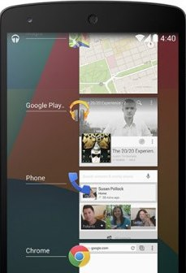

| Android is a Linux-based operating system for mobile devices such as smartphones and tablet computers. It is developed by the Open Handset Alliance led by Google. The Android Open Source Project (AOSP) is led by Google, and is tasked with the maintenance and development of Android. | |
| Enterprise / Developer: | |
| App Store: | Google Play Store |
| Number of applications: | ~ 2.000.000 |
| OS Kernel: | Linux |
| Version: | Android 4.4 KitKat |
| Version release date: | Thursday, October 31, 2013 |
Partnered with Nestle and launched after a special ad campaign, the KitKat version remains the most controversial release of the Android brand so far. The partnership with Nestle was done to get a trendy dessert name as the OS version name. The Jelly Bean feature was updated here. Despite not receiving many accolades, its hallmark features are:
KitKat is designed to run on devices with as little as 512MB of RAM. Google has implemented behind-the-scenes improvements to Android 4.4’s memory management, and will be providing developers and OEM manufacturers with tools and options to take advantage of these improvements. These memory improvements are expected to lead to smoother multi-tasking as well.
The fact that less than half of all Android phones are running Android 4.x has led to fragmentation issues within Android. It looks like these memory optimizations may lead to greater adoption of Android 4.4, and this should help unify Android to some extent.
You can now activate Google Now by simply saying "OK Google". It’s only available to Nexus 5 for now though. The contextual cards feature also gets an upgrade. Google Now cards will try to predict information you need based on your location, favorite sites or TV programs.
In addition, Android 4.4 features a new app-linking feature, which allows Google Search to deep-link search results to applications installed on a user’s device. So, for instance, searching for a restaurant via Google Now can direct you to a restaurant reservation app such as OpenTable, ready to make a reservation for that particular restaurant.
The old Android messaging app is now a thing of the past with KitKat. Instead, Google Hangouts now supports SMS and MMS, so all your messages will be in the same app. Hangouts will also be getting support for HD video calls across all devices.
Video and voice calling have also been improved, to make Hangouts an all-in-one solution to your communication needs. In addition, animated GIFs and location sharing through Google Maps will be supported.
Let’s face it; Android’s status bar and navigation buttons can sometimes get in the way, especially when you’re playing a game, reading eBooks or watching videos. Fortunately, Android 4.4 comes with a new immersive mode that hides everything except the app you’re using. Once you’re done, just swipe the edge of the screen to bring back your status bar and navigation buttons.
Android 4.4 improves user accesibility by adding support for system-wide closed captioning settings. You can set whether captions should be shown, the language captions will be shown for, and text-related settings such as size and font. Apps that use video will be able to access these settings and show on screen captions based on your settings.